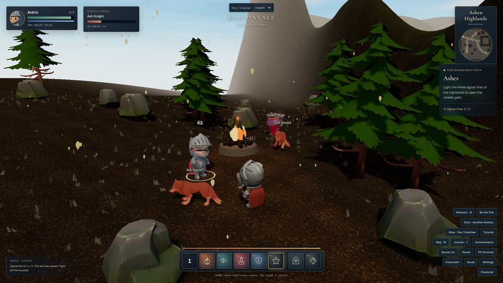
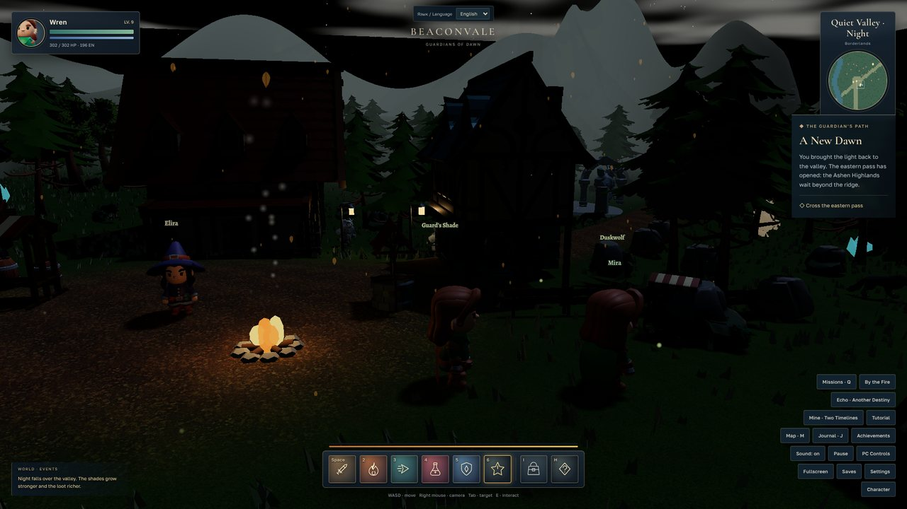
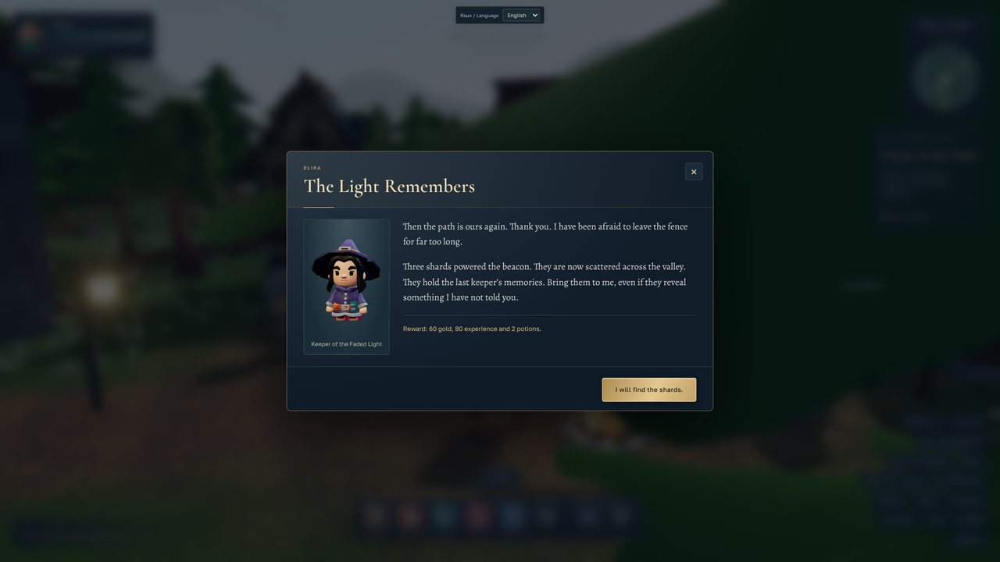
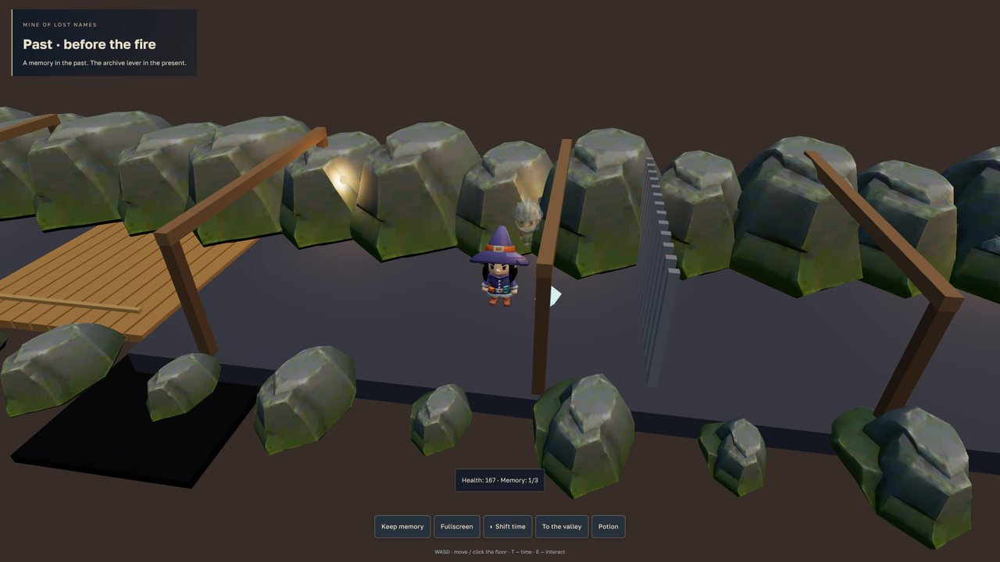
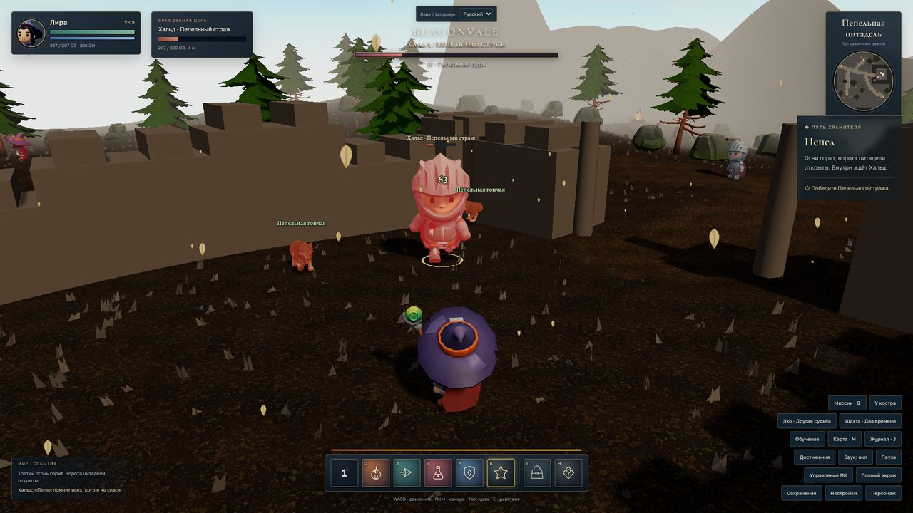
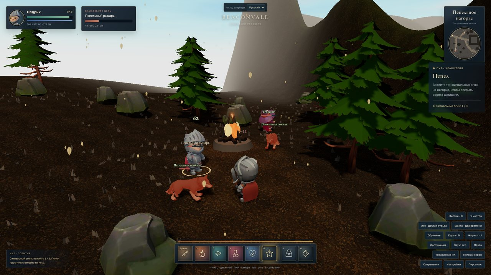
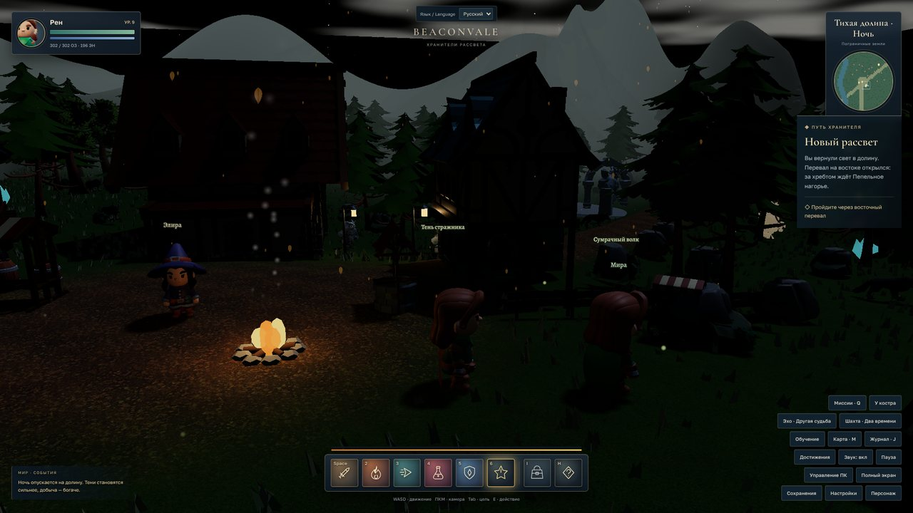
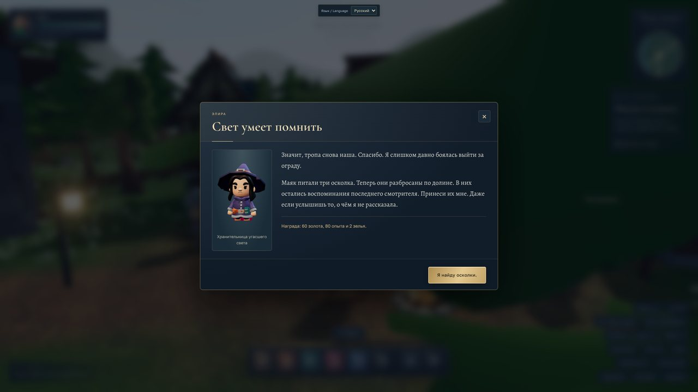
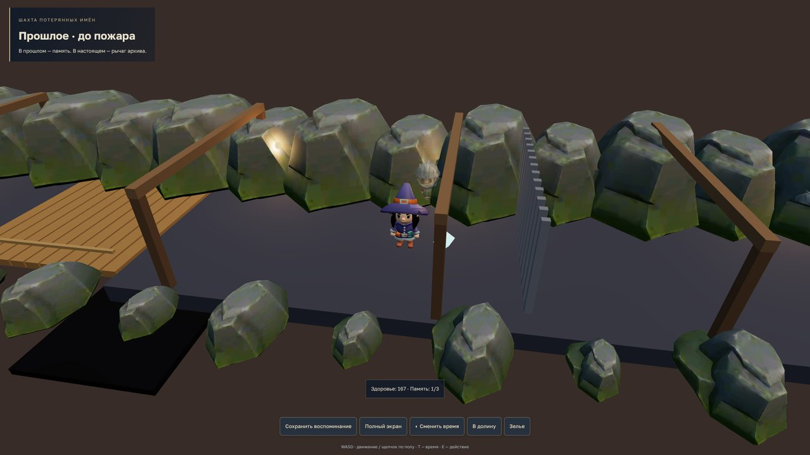

About the game
Об игре
For as long as anyone in the valley can remember, a beacon burned above the ruins and kept the shadows away. Now it is dark, the forest path is full of things that used to be people, and the keeper by the campfire needs someone who will not turn back. Choose a warrior, a mage or a ranger, recover the memories the valley has lost, face the prisoner of the seal — and then cross the pass into the Ashen Highlands.
Сколько помнят жители долины, над руинами горел маяк и держал тени на расстоянии. Теперь он погас, на лесной тропе бродят те, кто когда-то были людьми, а хранительнице у костра нужен тот, кто не повернёт назад. Выберите воина, мага или следопыта, верните воспоминания, которые потеряла долина, сразитесь с пленником печати — а затем пройдите перевал в Пепельное нагорье.
- Three classesWarrior, mage and ranger, each with its own attacks, area skill, class defence and fury strike.
- Four chapters, two endingsMemories to recover, side quests and a companion who fights beside you.
- The Mine of Lost NamesOne mine in two timelines: what you repair in the past opens the way in the present.
- The Ashen HighlandsLight three signal fires and face Hald, the Warden of Ash, in a three-phase battle.
- Living worldDay and night, rain and mist. At night the shades grow stronger and the loot gets richer.
- Plenty to findGear and upgrades, hidden caches, 17 achievements, three difficulty levels and New Game+.
- Три классаВоин, маг и следопыт: свои атаки, умение по области, защита класса и удар ярости.
- Четыре главы, две концовкиВоспоминания, дополнительные задания и спутница, которая сражается рядом.
- Шахта потерянных имёнОдна шахта в двух временах: то, что вы почините в прошлом, откроет путь в настоящем.
- Пепельное нагорьеЗажгите три сигнальных огня и победите Хальда, Пепельного стража, в бою из трёх фаз.
- Живой мирДень и ночь, дождь и туман. Ночью тени сильнее, а добыча богаче.
- Есть что искатьСнаряжение и улучшения, тайники, 17 достижений, три уровня сложности и Новая игра+.
Screenshots
Скриншоты









System requirements
Системные требования
- Windows 10 (version 1809 or later) or Windows 11, 64-bit
- 4 GB RAM, 600 MB of disk space
- Graphics with DirectX 11 support (Intel HD Graphics 620 or better)
- Keyboard and mouse or a gamepad
- Windows 10 (версия 1809 и новее) или Windows 11, 64-bit
- 4 ГБ ОЗУ, 600 МБ на диске
- Видеокарта с поддержкой DirectX 11 (Intel HD Graphics 620 или лучше)
- Клавиатура и мышь или геймпад